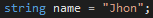

A változó egy olyan szimbolikus névvel ellátott absztrakt tárolóegység, amely ismert vagy ismeretlen mennyiségű információt tartalmaz, melyekre értékként tekintünk.
A programozási nyelvekben a változó úgy képzelhető el, mint egy hely, ami alkalmas egy érték tárolására a számítógép memóriájában. A változók alkalmazása a matematikában megszokotthoz hasonló kényelmes lehetőségeket biztosít.
A változó nevet kap, aminek segítségével a későbbiekben a változóban lévő objektumra hivatkozni lehet. Ez úgy működik, miként az emberek neve, amivel mások megszólíthatják.
Jellemzően a változó neve a memória néhány bájtjának címét jelenti, így a változóra vonatkozó művelet e memória rész tartalmát használja, vagy módosítja. Ez a név szerinti kötés. Ha nagy adatterület szükséges, vagy pillanatnyilag (a program készítésekor) nem ismert a mérete, akkor a változóban nem közvetlenül az adatot tároljuk, hanem csak a memória érintett részére mutató hivatkozást.
A változók két fontos tulajdonságát külön ki kell emelni: az életciklust, és az érvényességi kört. A memória gazdaságossága érdekében a változónak az első használat előtt helyet kell biztosítani, a használat befejezésekor pedig fel kell szabadítani a területét. Az érvényességi kör segít meghatározni a változó életciklusát. A változó rendszerint a program kód valamelyik érvényességi körében van, tehát a változó a programrész aktiválódásakor keletkezik, majd megszűnik, amikor a programrész véget ér. Míg egy egyszerű változó egyetlen egészet, vagy szöveget tartalmaz, addig léteznek programnyelvek, amik megengedik az érték mellett az adat típusának tárolását is. Ezek a nyelvek paraméter szerinti többalakú függvények írását is lehetővé teszik. Ezek a változók az egyszerűekhez hasonlóan működnek, de a típusukat is hordozzák.
A változók kétfélék lehetnek, van, amelyik új értéket is felvehet, és van, amelyik nem.
A változók olyan nevet kaphatnak, amit a programozási nyelv szintaktikája megenged, ajánlatos a megállapodásokat betartani, de ezeken túl egyéni ízlés kérdése.
A C és a hozzá hasonló programozási nyelvekben a változók neve állhat betűkből, számokból, és tartalmazhatja az aláhúzás jelet, de mindenképpen betűvel kell kezdődnie.
Egyes programnyelvekben a változó neve meghatározza a benne tárolható adat típusát.
Szöveg változó deklarálása C#-ban: 
Érvényességi kör és hatókör megadja, hogy a változót a programszöveg mely részén használhatjuk, és a végrehajtás közben milyen körben rendelkezik majd értékkel.
A legtöbb programozási nyelvben a változók többféle érvényességi körrel is rendelkezhetnek. A változó érvényességi köre a programkód azon része, ahol a változó nevének jelentése van (használható, ismert). A globális változóra vagy egy korlátlan érvényességi körű változóra a program bármely részéből lehet hivatkozni.
A változóra az érvényességi körén kívülről hivatkozni hibás és értelmetlen.
A példában "i" változó csak a ciklus közben létezik, csak itt lehet rá hivatkozni.
A létrehozott változó értékkel rendelkezik, ami valahol a számítógép memóriájában helyezkedik el. A program a memóriában helyezi el az adatobjektumokat, majd az újrafelhasználhatóság miatt az objektumok törlődnek, ha már nincs szükség a bennük tárolt értékre.
A memóriaváltozók kezelése nagymértékben függ a nyelvi környezettől. Néhány nyelvi megvalósítás könnyen felismeri azokat a változókat, amikre már nincs szükség a függvény befejeződése után. A lokális változók területe a végrehajtási verem részét képezi, ami automatikusan felszabadul, amikor a függvény végrehajtása befejeződik.
Az egyéb objektumoknak a heap-ben, vagy a memória éppen nem használt közös részén lehet helyet foglalni. Ezek a részek automatikusan nem tudnak felszabadulni, ezért kezdeményezni kell megszűnésüket, ha már nincs szükség rájuk.
A szükséges memória lefoglalása főleg az összetett adatstruktúrák esetén fontos tényező. Egy változó mutathat egy dinamikusan létrehozott adatstruktúrára, ilyen esetben az adatszerkezet részeire nem közvetlenül a változóval tudunk hivatkozni, a változó mutat a létrejött struktúrára. Ez biztosítja a GC-s nyelvek hulladékgyűjtési módszerének működését, hiszen amikor egy adatszerkezetre nincs már egyetlen mutató sem, akkor az felszabadítható.
| Név | .NET osztály | Leírás | Szélesség | Memóriabeli méret (btye) | Tartomány |
|---|---|---|---|---|---|
| byte | Byte | 8 | 1 | 0 – 255 | |
| sbyte | SByte | 8 | 1 | -128 – 127 | |
| int | Int32 | Egész számok | 32 | 4 | -2147483647 – 2147483647 |
| uint | UInt32 | Előjel nélküli egészek | 32 | 4 | 0 – 4294967295 |
| short | Int16 | Egész számok (kis tartomány) | 16 | 2 | -32768 – 32767 |
| ushort | UInt16 | Előjel nélküli egészek (kis tartomány) | 16 | 2 | 0 – 65535 |
| long | Int64 | Egész számok (nagy tartomány) | 64 | 8 | -9223372036854775808 – 9223372036854775807 |
| ulong | UInt64 | Előjel nélküli egészek (nagy tartomány) | 64 | 8 | 0 – 18446744073709551615 |
| float | Single | Lebegőpontos számok | 32 | 4 | -3,402823e38 – 3,402823e38 |
| double | Double | Kétszeres pontosságú lebegőpontos számok | 64 | 8 | -1,79769313486232e308 – 1,79769313486232e308 |
| char | Char | Egy darab karakter | 16 | 2 | Unicode Symbols |
| string | String | Karakterlánc | 2/char | ||
| decimal | Decimal | Pillanatnyi érték | 128 | 16 | ±1,0×10e-28 – ±7,9×10e28 |
| bool | Boolean | Logikai érték | 8 | 1 | True | False |
| object | Object |
Nagy mennyiségű, logikailag összefüggő adatok tárolására összetett adatstruktúrákat alkalmazunk.
Az egyik ilyen a tömb, ami csakis azonos típusú adatokat tud tárolni.
A tömb mindig referencia típus lesz, ezért foglalni kell neki memóriaterületet.
Ez a new operátorral történik, ekkor kell az elemszámot meghatározni. Fontos, hogy a tömbök méretének statikusan, azaz fordítási időben, ki kell derülnie!
A tömb menet közben nem méretezhető át.
Méretét többféleképp is megadhatjuk.
A tömb elemeit megadhatjuk a program készítése közben is, ekkor a kezdőértékeket kapcsos zárójelek között fel kell sorolnunk.
Megjegyzés: A numerikus tömbelemek alapértelmezett kezdőértékei nullák.
A tömbök elemeit index segítségével érhetjük el. Szögletes zárójelek között a tömb neve után meg kell adni, hogy hányadik elemet szeretnénk elérni. A tömbök indexelése 0-val kezdődik, azaz egy N elemű tömb első elemének indexe 0, az utolsó elemének pedig N-1.
A tömb Length tulajdonsága a tömb elemszámát adja meg.
Figyelnünk kell arra, hogy a tömbnek csak azokat az elemeit érjük el, amik léteznek. Ha olyan indexre hivatkozunk egy tömbben, ami nem létezik, akkor a programunk hibával leáll.